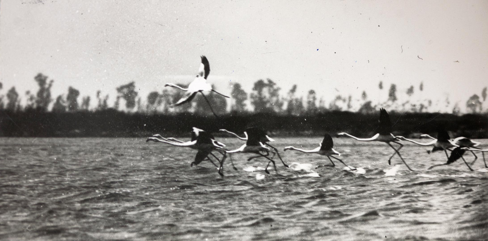
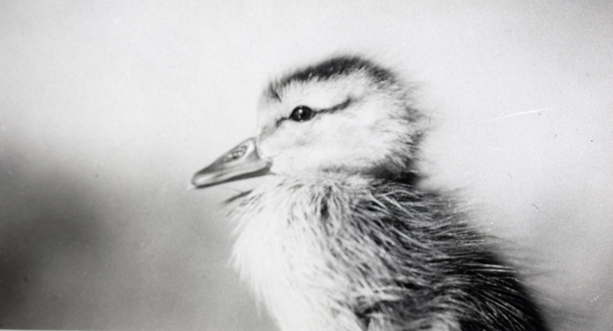
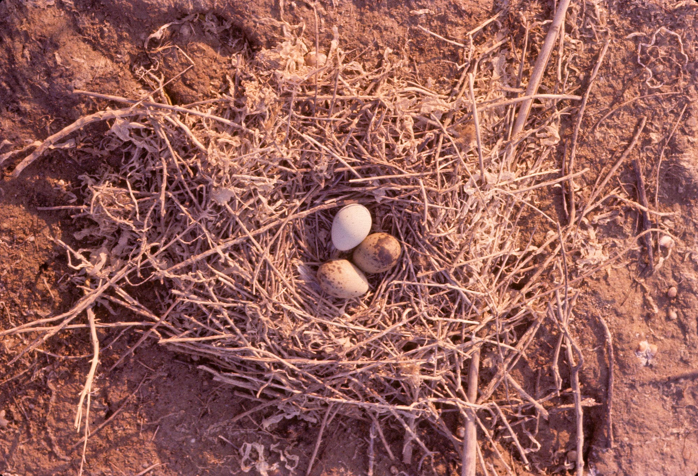
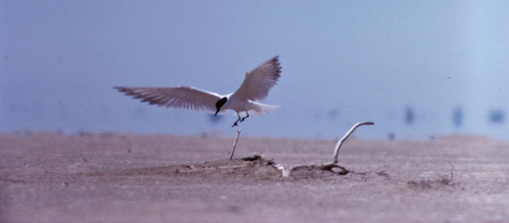

LES AUS DE BUDA

Foto: Salvador Maluquer
ELS CALAIXOS DE BUDA
Un hàbitat únic per a les aus

Foto: Salvador Maluquer (dècada de 1950 i 1960).
Arxiu Parc Natural del Delta de l’Ebre.

Una manera d’avaluar la sostenibilitat d’un hàbitat és mesurar la seua biodiversitat d’organismes vius i ecosistemes que el formen. I Buda és un d’aquests hàbitats, especialment per als ocells.

Foto: Salvador Maluquer (dècada de 1950 i 1960).
Arxiu Parc Natural del Delta de l’Ebre.